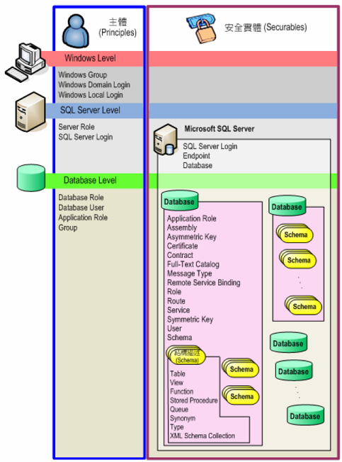
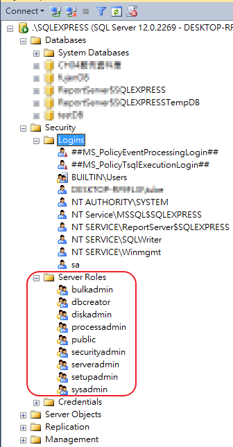
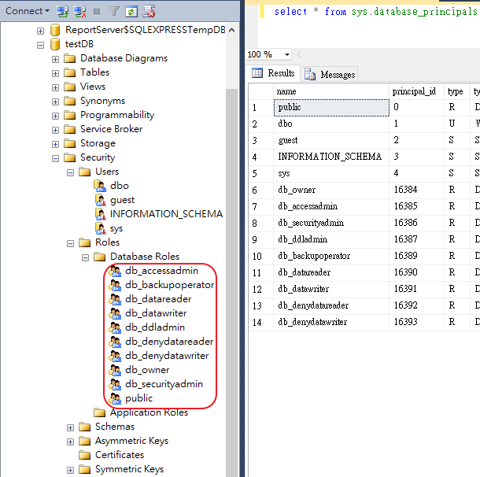
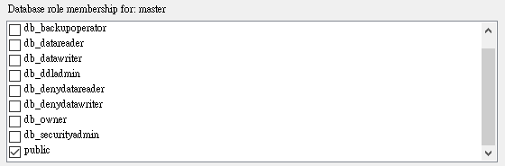
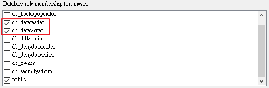

SQL SERVER使用者帳戶的伺服器角色與資料庫角色
一、主體(Principal)分成以下三種層級：
1、Windows 層級 (Windows Level)：Windows Group、Domain、User Account，以及 Local User Account。
2、資料庫伺服器層級 (SQL Server Level)：Login、Server Role等。
3、資料庫層級 (Database Level)：Database Users、Database Roles、Application Role。
二、安全實體(Securable)分成以下三種層級：
1、Server Securable Scope：資料庫、System Login、Server Role 等
2、Database Securable Scope：結構描述 (Schema)、Database User、以及 Database Role，或是 ApplicationRole 等
3、Schema Securable Scope：類型 (Type)、XML結構描述集 (XML Schema Collection)、物件 (Object)：包含關聯表、視界、預儲程序等。

三、在 SQL SERVER的使用者帳戶分為兩種：伺服器登入、資料庫登入
階層關係為伺服器登入 > 資料庫登入，請參考圖一的「SQL SERVER的安全實體範圍」。
1、伺服器登入可由伺服器角色來決定誰可登入

| 伺服器層級角色名稱 | 說明 |
| sysadmin | 系統管理員 (sysadmin) 固定伺服器角色的成員可以在伺服器中執行所有活動。 |
| serveradmin | 伺服器管理員 (serveradmin) 固定伺服器角色的成員可以變更整個伺服器的組態選項及關閉伺服器。 |
| securityadmin | 安全性管理員 (securityadmin) 固定伺服器角色的成員可以管理登入及其屬性。他們可以 GRANT、DENY 及 REVOKE 伺服器層級權限。如果他們擁有資料庫的存取權，也可以 GRANT、DENY 和 REVOKE 資料庫層級權限。此外，他們可以重設 SQL Server 登入的密碼。 |
| processadmin | 處理序管理員 (processadmin) 固定伺服器角色的成員可以結束在 SQL Server 執行個體中執行的處理序。 |
| setupadmin | setupadmin 固定伺服器角色的成員可以使用 Transact-SQL 陳述式加入和移除連結伺服器 (使用 Management Studio 時需具備 sysadmin 成員資格)。 |
| bulkadmin | 大量管理員 (bulkadmin) 固定伺服器角色的成員可以執行 BULK INSERT 陳述式。 |
| diskadmin | 磁碟管理員 (diskadmin) 固定伺服器角色是用來管理磁碟檔案。 |
| dbcreator | 資料庫建立者 (dbcreator) 固定伺服器角色的成員可以建立、改變、卸除及還原任何資料庫。 |
| public | 每一個 SQL Server 登入都屬於 public 伺服器角色。當伺服器主體未被授與或拒絕安全物件的特定權限時，該使用者會繼承授與該物件之 public 的權限。只有當您想要將任何物件提供給所有使用者使用時，才指派該物件的 public 權限。您無法變更 public 的成員資格。 |
可使用sys.server_principals來作查詢
select * from sys.server_principals
2、資料庫登入可由資料庫角色來決定誰可登入

| 資料庫層級角色名稱 | 說明 |
| db_owner | db_owner 固定資料庫角色的成員可以在資料庫上執行所有的組態和維護活動，也可以卸除資料庫。 |
| db_securityadmin | db_securityadmin 固定資料庫角色的成員可以修改角色成員資格及管理權限。將主體加入這個角色可能會產生不必要的權限擴大。 |
| db_accessadmin | db_accessadmin 固定資料庫角色的成員可以針對 Windows 登入、Windows 群組及 SQL Server 登入加入或移除資料庫的存取權。 |
| db_backupoperator | db_backupoperator 固定資料庫角色的成員可以備份資料庫。 |
| db_ddladmin | db_ddladmin 固定資料庫角色的成員可在資料庫中執行任何「資料定義語言」(DDL) 的命令。 |
| db_datawriter | db_datawriter 固定資料庫角色的成員可以加入、刪除或變更所有使用者資料表中的資料。 |
| db_datareader | db_datareader 固定資料庫角色的成員可以從所有使用者資料表讀取所有資料。 |
| db_denydatawriter | db_denydatawriter 固定資料庫角色的成員不能加入、修改或刪除資料庫中使用者資料表的任何資料。 |
| db_denydatareader | db_denydatareader 固定資料庫角色的成員不能讀取資料庫中使用者資料表的任何資料。 |
| public | 每個資料庫使用者都屬於 public 資料庫角色。 當使用者未授與或拒絕安全物件的特定權限時，該使用者會繼承授與給該物件之 public 的權限。 |
可使用sys.database_principals來作查詢
select * from sys.database_principals
特別提醒，有時候你會開一個 SQL Server 帳號讓程式去讀寫資料庫，
但卻發生開了帳號，資料庫角色使用了預設的 public，卻也無法讀寫資料庫

解決方法，請特別再指定 db_datareader 與 db_datawriter 角色

即可讀寫資料庫。
參考資料：